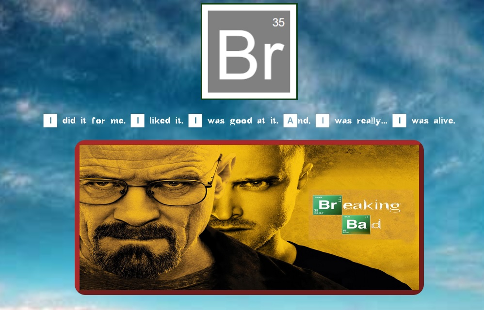
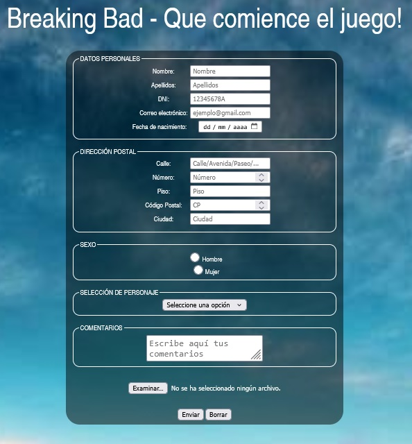
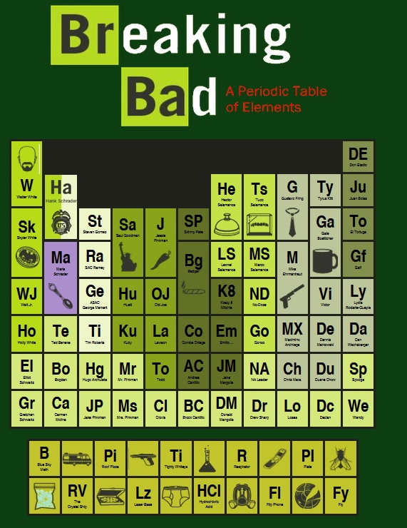
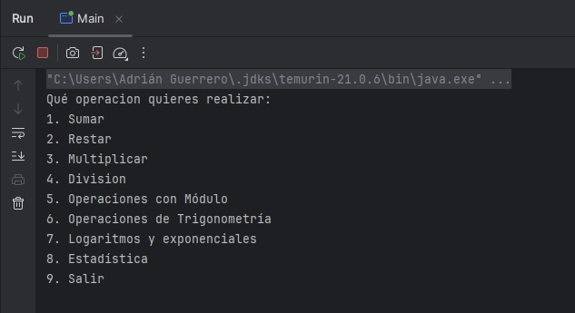
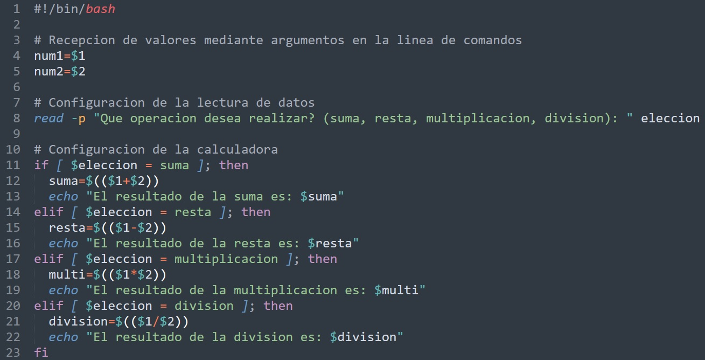

Proyectos destacados
Algunos de los proyectos que he ido desarrollando durante el transcurso del primer año del grado
superior de desarrollo de aplicaciones multiplataforma son:
Página estilo Breaking Bad
Perteneciente a la asignatura de "Lenguaje de Marcas y Sistemas de Gestión de
la Información" con
el objetivo de asentar conocimientos en los lenguajes de etiquetas HTML y CSS.



Se puede acceder a este proyecto a través del siguiente link.
Calculadora Java
Trabajo grupal perteneciente a la asignatura de "Entornos de Desarrollo" con el
objetivo de
aprender a utilizar aserciones y pruebas unitarias sobre proyectos.

Calculadora simple Bash
Perteneciente a la asignatura de "Sistemas Informáticos" con el objetivo de
crear una calculadora
simple utilizando el lenguaje Bash.
